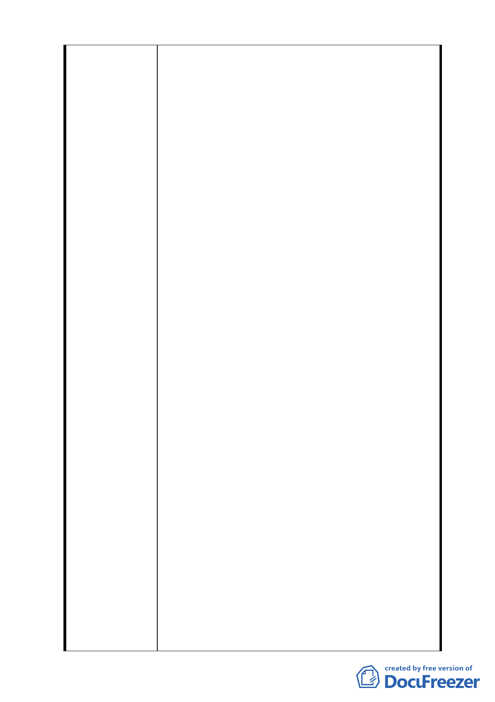

北市政府都市發展局 (以下簡稱「都發局」)98年
10月30日北市都規字第 09836521507 號函規定表
訂規範內容、格式，於民國98年11月3日送請台北
市都市計畫委員會(以下簡稱「都委會」) 辦理公
展在案、俟後獲台北市政府府都規字第
09838862600號函於98年12月23日至99年1月22日
公展完成。
二、據「都委會」民國99年3月22日第609次都市計畫委
員會審議，會議結論稱：由市府都委會委員組成專
案小組續審，併案檢討「金泰段臺北好好看開發
案」、臺北市「基隆河 (中山橋至成美橋段) 附近
地區土地使用分區與都市設計管制要點」( 北段地
區〉計畫案(下稱「大灣北段通檢計畫」) 使得進
行實質審查作業；惟「金泰段臺北好好看開發案」
自民國97年10月迄今歷經年餘反覆研擬、檢討獲致
共識後，始依「都發局」表訂版本送件審查，今如
須併「大灣北段通檢計畫」始得實質審查，不免令
陳情人等憂慮：
(一)「大灣北段通檢計畫」進程繁複，其結論又將
牽動「金泰段臺北好好看開發案」內容，如此一來，
歷經年餘之討論折衝豈非俱付東流？送審時程又恐
將遙遙無期。
(二)「促進都市再生2010年臺北好好看」開發計畫
案尚有領取建築執照及開工時程限制，如依是項併
案檢討結論執行，勢必無法符合上揭時程限制，衍
生之損失將難以估計。
三、陳情人等再次表明立場如下：
（一）陳情人等願支持市府政策並依市府認可方案
設計規劃、施工。
（二)現將已形成共識之「金泰段臺北好好看開發
案」與尚待縝密檢討之「大灣北段通檢計畫」脫鉤
並從速審查。
（三）北市都規字第 09836521507 號函認可之都市
- 35 -